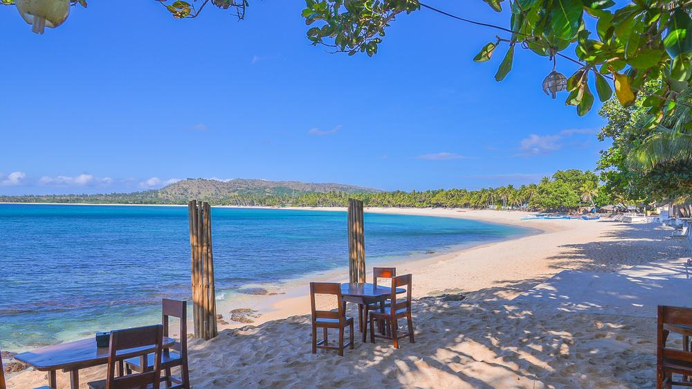
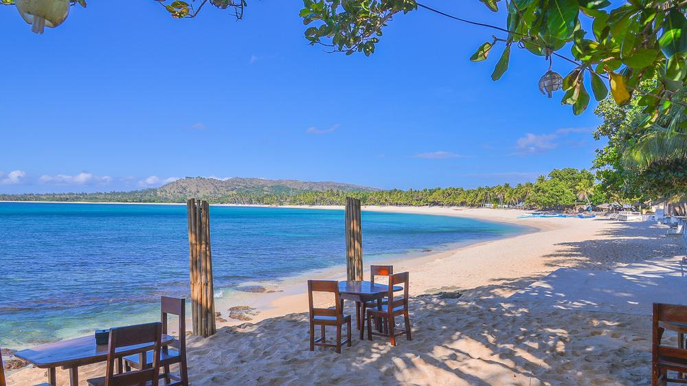

Top 10
Philippine Destination

 



Boracay Island Aklan


Boracay Island, one of the top beaches in the Philippines and one of the best Visayas tourist spots,
is blessed w ith a long stretch of powdery white sand beach (Called White Beach),
crystal clear and azure waters, a stunning sunset, and more.
the island doesn’t fall short onn adventures and activities for people of all ages.
The name Boracay is attributed to different origins.
One story says that it is derived from the local word "borac" which means white cotton with characteristics
close to the color and texture of Boracay's white sugary and powdery sand. “Calm, warm waters, gently sloping sand,
very relaxing, possibly the most beautiful beach in Asia”. This was how TripAdvisor described Boracay Island
after it published their annual pick of the best beaches. Voted by the travelers themselves,
Boracay ranked top 24 all over the world and the top 2 in Asia
Location


Siargao Island


Siargao is an island of nine municipalities in the province of Surigao del Norte.
Known as the “Surfing Capital of the Philippines”,
Siargao is mainly responsible for introducing surfing to the country. Apart from surfing,
Siargao is also open to other activities such as cave explorations and rock climbing.
One of the best-known surfing spots in Siargao is Cloud 9, to which the town owes its surfing legacy.
Cloud 9 is world-famous for its thick, hollow tubes and fast-barreling right-hand waves that break over a reef.
Siargao is a smaller island (169 sq miles) in the province of Surigao del Norte.
The name of the island comes from the Visayan Language (A Central Filipino Dialect)
for the specific type of mangrove found all over the islands, Siargaw (Premna Odorata).
Surigao City is popularly known as the City of Island Adventures and is considered a haven of leisure and adventure because
it has 17 panoramic islands with long stretches of pristine white sand beaches, mystical caves,
vast mangrove forest and under water sceneries.
Location

Pagudpud Ilocos Norte


Pagudpud is a northern coastal town located in the Ilocos Norte region of the Philippines.
It is located 77 KM north of Laoag City in Ilocos Norte.
It's a must-visit destination in Northern Luzon and is usually part of the Ilocos itinerary as a side trip when in Laoag.
It is often referred to as the “Boracay of the North” mainly because of its stunning white Pagudpud Ilocos beaches,
which is what Pagudpud is known for. One of the beautiful small towns in the Philippines,
Pagudpid is not packed with fancy shops, bars, and clubs. However, it offers visitors wonderful natural attractions like coves,
caves, and rock formations and is an emerging top tourist destination in the Philippines and a must-visit Luzon tourist spot.
You may not party the night away in Pagudpud like Boracay, but you can enjoy the outdoors and the beauty of nature.
Location

Baguio, to many, is best known as the "Summer Capital of the Philippines",
with its cool climate making this a spot to escape the chaotic scenes in Manila.
The city is also home to tropical pine forests, lending the city the nickname "City of Pines".
It serves as a tourist hub in the Cordilleras, serving as a jumping point to other tourist spots like Mount Pulag,
Sagada and Banaue. Baguio is considered a city separate from the province of Benguet,
but it is considered part of Benguet practically, and it is the economic center for both the province and the Cordillera region.
Some of the city's tourism promotions also point to nearby La Trinidad, which is both administratively and geographically in Benguet,
and is the provincial capital.
Location

Batangas


Batangas tourist spots include historical sites, distinct architecture, and outdoor attractions.
The province is home to several gorgeous beaches near Manila, ranging from black to powdery white.
It caters to outdoor adventures as it has farms, camping grounds, waterfalls,
mountains, diving sites, and hiking trails.
Batangas has many products that it has become 'famous' for such as embroidery, 'balisong' or butterfly knives,
and 'kapeng barako or brewed coffee. It is an extremely popular spot for its well-known beaches,
particularly the diving spots which you can find in Lian, Laiya, Mabini, and Nasugbu.
Savor a slice of paradise in the many seaside towns and villages. Dive into the depths of Anilao, Batangas'
very own underwater Eden. Swin and dive into the tropical waters of Verde Island Passage,
described as the center of the world's marine biodiversity.
Location

Coron


Coron, one of the top tourist destinations in the Philippines,
is best known for world-class World War II-era wreck diving,
but the island also offers limestone karst landscapes, beautiful beaches,
crystal-clear freshwater lakes, and shallow-water coral reefs
It's nicknamed as The Blue Lagoon and surrounded by tall limestone formations,
making the area look and feel very secluded. Either enjoy the view or take a dip,
the choice is up to you! If you want to see underwater artifacts from the 40s,
you'll enjoy wreck diving in the waters of Coron.
Coron was created as a municipality by the American authorities in 1902.
Two years later, the island Culion was removed from the jurisdiction of Coron.
In 1950, several barrios were separated to form the municipality of Busuanga. Later,
the Linapacan group of islands became an independent municipality.
Location

Hundred Islands


Island Hundred Islands is a popular tourist spot in Alaminos Pangasinan because of the stunning views it offers.
There's a viewing deck Governors Island Hundred Islands perfect for taking selfies and panoramic shots.
To get there, you'll have to climb a 123-step staircase. It's tiring but so worth it. The Philippines truly is home to thousands of
amazing islands that never disappoints. Believe it or not, there’s one place in the country that is famous for having more than one hundred paradise for beach lovers—Pangasinan Hundred Islands.
The Hundred Islands National Park Alaminos Pangasinan, also known as “Kapulo-puloan or Taytay-Bakes”,
boasts 124 islands at low tide and 123 islands at high tide that are scattered along the Lingayen Gulf.
"100 Islands" sure is a catchy name; but Hundred Islands National Park in the Pangasinan province actually consists of 124 islands,
and 123 islands at high tide. It's distinct mushroom shaped islands (caused by years of ocean waves and eroding action) are believed to be over two million years old.
Location

Cebu


Also known as the “Queen City of the South”,
Cebu City is the capital city of the province of Cebu and is the “second city” of the Philippines,
being the center of Metro Cebu, the second most populous Metropolitan area in the Philippines after Metro Manila.
For six years, until Legazpi's removal to Manila, Cebu was the Spanish colonial capital.
It remained the primary Spanish bastion in the southern part of the Philippines.
The cultural and commercial core of the central Visayan region, Cebu was opened to foreign trade in 1860.
It was chartered as a city in 1936.
The furniture industry of Cebu Province is gaining much recognition around the world for its excellent designs and high standard quality products.
Aside from the world-class artistic designs and quality, Cebu's furniture gives you the most comfortable and homely feeling.
It has countless coves and beaches, but it is the tiny islands just offshore that will capture your heart. Boasting sugar-white beaches,
clear azure waters and astounding coral reefs just offshore, they are holiday-brochure perfect, but without the crowds.
Location

Sagada


Sagada is also considered as Shangri-la because of its natural wonders which are all beautiful and attractive to the visitors.
Sagada is well-known for its famous activities like hiking, exploring caves and waterfalls,
camping, picnics, rappelling, visiting historical places, and joining with tribal gatherings.
Sagada is known for its scenic and calming mountain valleys, rice fields, limestone caves,
refreshing waterfalls, and cliffs that come with a sea of clouds.
Add to that the friendly Igorot locals, fresh servings of food, coffee, and lemon pies.
Location

This place is known as Mestizo District,
where the streets are lined with Spanish Era ancestral houses
(all with Spanish time tile roofs, massive hardwood flooring,
balustrades and other in varying Spanish, Mexican, and Chinese architectural styles).
Vigan is famous for its well-preserved Spanish Colonial town, historical Vigan tourist spots,
and delicious food and delicacies. Because of its charm, it has been inscribed as one of the UNESCO World Heritage Sites.
Conquistador Juan de Salcedo attacked and secured the town, giving it the name Vigan after a native plant.
He expanded the name to Villa Fernandina in honor of the Philip II's deceased son.
Salcedo continued his conquest, attacking and subjugating Camarines, Albay, and Catanduanes.
Vigan is unique for having preserved much of its Hispanic colonial character, particularly its grid street pattern and historic urban lay out.
Its significance also lies on how the different architectural influences are blended to create a homogenous townscape.
Location